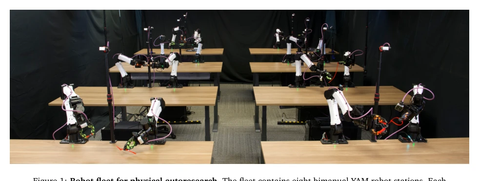
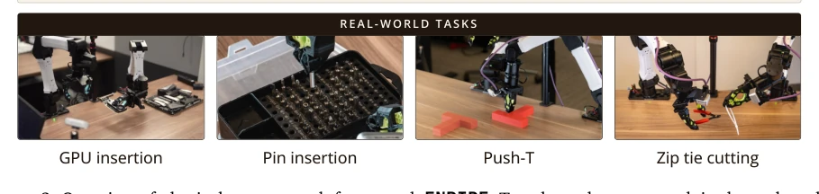
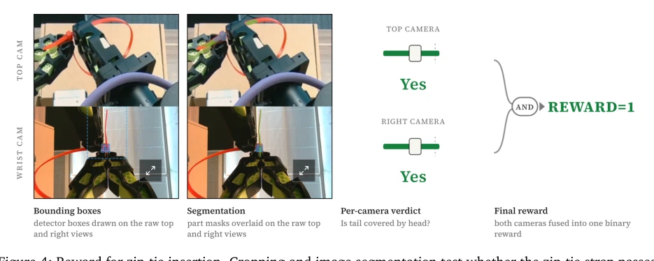
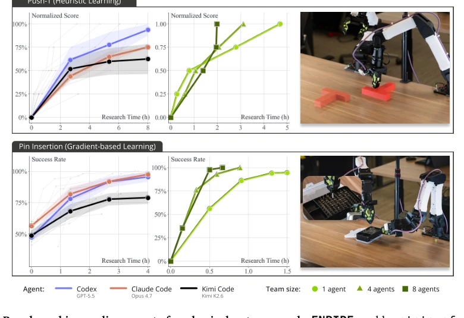
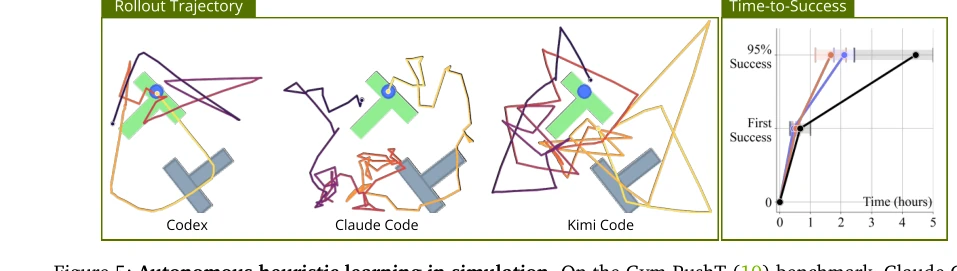
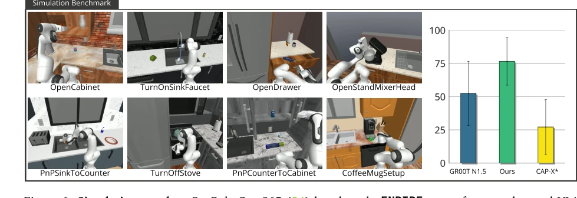
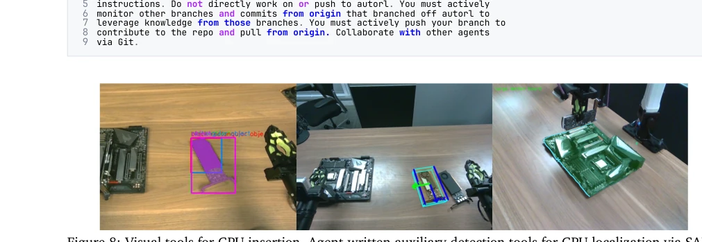
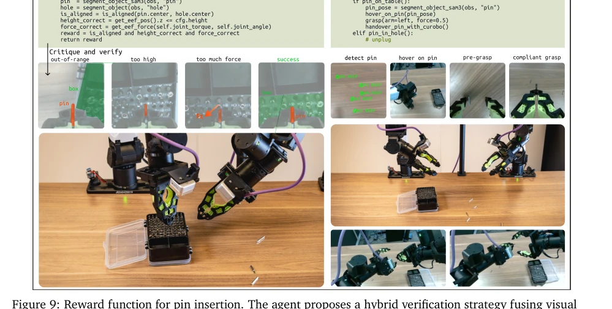
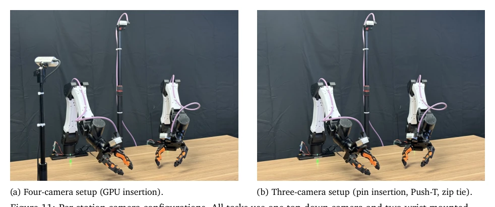
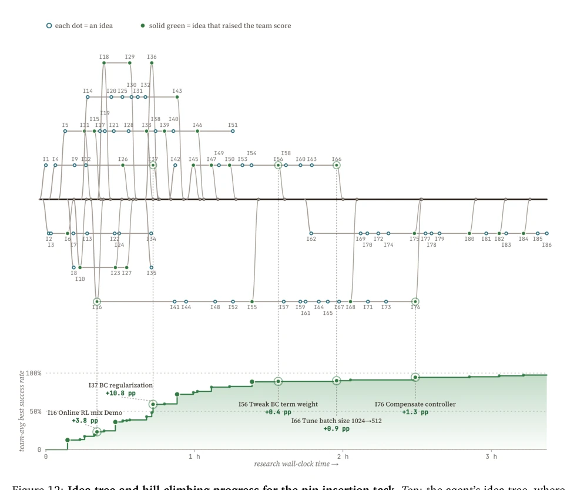

This paper attempts to enable coding agents to self-evolve in the real world, which sounds appealing, but essentially builds an "automated cage" for human engineers. Although the ENPIRE framework achieves a closed loop, environment construction still requires human guidance, and token consumption grows super-linearly during multi-agent expansion, hinting at the cost of "autonomy". However, achieving a 99% success rate in real physical environments is indeed praiseworthy, at least proving that physical feedback loops are feasible. It bridges the gap between digital agents and physical robots, but does not completely escape the shadow of humans in initial setup. This "semi-autonomous" mode is pragmatic in engineering, but compromises the purity of scientific exploration, after all, the "one-time cost" of environment construction still requires human intervention.
Dexterity manipulation relying on human supervision is a bottleneck. Existing coding agents [22] are mostly in digital environments, lacking physical feedback. The real world has high non-determinism, requiring automatic reset and verification. Previous work [26] is mostly in digital research, not touching hardware budget constraints. [15] involves tool calling, but does not achieve fully autonomous closed-loop. A mechanism is needed to let agents iterate strategies under real physical constraints, not just relying on simulation. Human labor in data collection and evaluation becomes a scaling bottleneck, limiting the speed at which robots acquire dexterity. Existing methods perform well in simulation, but fail when transferred to the real world due to the unpredictability of physical dynamics, urgently needing an automated research framework capable of handling real feedback.

Figure 1: Robot fleet for physical autoresearch. The fleet contains eight bimanual YAM robot stations. Each station owns its robot hardware, compute, and coding agent. Website: research.nvidia.com/labs/gear/enpire
ENPIRE is divided into two stages. EN stage: Human guides construction of environment API (safe, reset, reward). PIRE stage: Agent autonomously optimizes strategy (RL/BC/Heuristics). E module: Multi-agent parallel testing, Git collaboration. Environment module provides Gym API, strategy improvement module allows agent to modify code. Evolution module accelerates search via sharing successful recipes. Agents synthesize perception skills via tool calling, such as SAM3 detection. The system contains four core modules: Environment, Policy Improvement, Rollout, Evolution, forming a closed loop. Agents can call tools to optimize infrastructure and algorithm code, solving failure modes.

Figure 3: Benchmarking coding agents for physical autoresearch. ENPIRE enables state-of-the-art coding agents to achieve autonomous policy improvement on Push-T and Pin Insertion tasks. ENPIRE also scales with resources, as increasing the number of robot agent workers reduces the wall-clock time req

Figure 5: Autonomous heuristic learning in simulation. On the Gym-PushT (10) benchmark, Claude Code (orange) and Codex (blue) achieve 95% success rate within approximately 2 hours, while Kimi Code (black) takes twice the time.
Push-T, Pin Insertion. 1/4/8 robots. Metrics MRU/MTU. Results: Time reduced, Token increased. RoboCasa simulation is also effective. Collaboration between agents improves efficiency. In the Pin Insertion task, 8 agents reduced time from 1.5 hours to 40 minutes. Simulation benchmark RoboCasa365 shows better than GR00T. Under multi-agent setup, GPU utilization increases, but robot utilization decreases. Token consumption grows super-linearly with fleet size, indicating a trade-off between efficiency and speed.

Figure 4: Reward for zip-tie insertion. Cropping and image segmentation test whether the zip-tie strap passes through the zip-tie head. Two camera views are considered to prevent false positives.

Figure 6: Simulation results. On RoboCasa365 (34) benchmark, ENPIRE outperforms end-to-end VLA (GR00T (5)) and zero-shot agentic tool use without autoresearch (CaP-X (15)).

Figure 8: Visual tools for GPU insertion. Agent-written auxiliary detection tools for GPU localization via SAM3 and depth estimation.

Figure 9: Reward function for pin insertion. The agent proposes a hybrid verification strategy fusing visual alignment of the pin tip to the hole, insertion depth from proprioception signals, and end-effector torque detection.
其他图片Other Figures

Figure 11: Per-station camera configurations. All tasks use one top-down camera and two wrist-mounted cameras, all RealSense D405. The GPU insertion task in Fig. 11a additionally uses a side-mounted RealSense D435i on the left pole for a wider third-person view of the slot; the remaining tasks use t

Figure 12: Idea tree and hill-climbing progress for the pin insertion task. Top: the agent’s idea tree, where each node I𝑘is a proposed idea and each new lane is a new idea branch. Two nodes joined by a horizontal line are related ideas. Solid green nodes improved the team-average best success rate;

Figure 17: Per-object SAM3 detection outcomes across top-camera resolutions and prompt variants for the RoboCasa counter-to-cabinet diagnostic set. Green cells indicate that the original target prompt produced a correct mask, yellow cells indicate that a candidate prompt produced a correct mask, gra